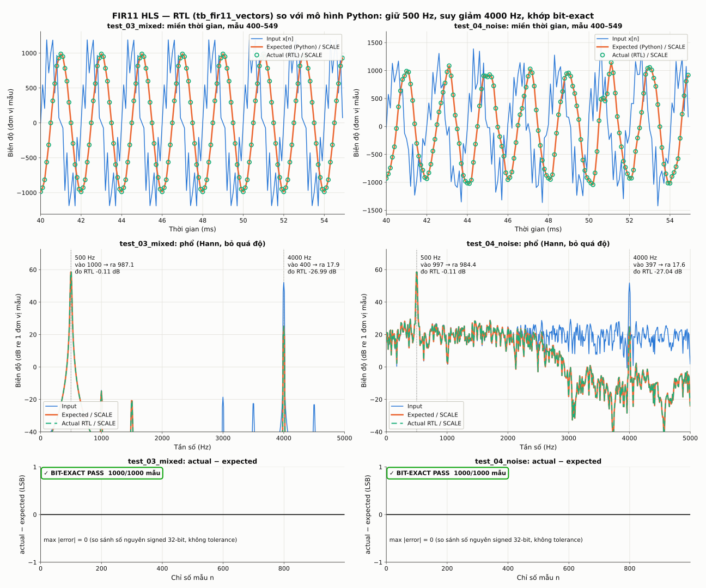

Kết quả FIR11 RTL so với mô hình Python
Tổng: 6/6 test bit-exact, 6000/6000 mẫu khớp, 0 không khớp/thiếu. Nguồn: outfeed/<test>/actual.dat (RTL) và data_test/fir_test/output/ (Python).
| Test | Bit-exact | Chi tiết | Gain 500 Hz (dB) đo RTL / lý thuyết | Gain 4000 Hz (dB) đo RTL / lý thuyết |
|---|---|---|---|---|
| test_01_low | ✓ BIT-EXACT PASS | 1000/1000 mẫu khớp, max |error| = 0 | -0.112 / -0.112 | — |
| test_02_high | ✓ BIT-EXACT PASS | 1000/1000 mẫu khớp, max |error| = 0 | — | -26.995 / -26.995 |
| test_03_mixed | ✓ BIT-EXACT PASS | 1000/1000 mẫu khớp, max |error| = 0 | -0.112 / -0.112 | -26.995 / -26.995 |
| test_04_noise | ✓ BIT-EXACT PASS | 1000/1000 mẫu khớp, max |error| = 0 | -0.113 / -0.112 | -27.043 / -26.995 |
| test_05_impulse | ✓ BIT-EXACT PASS | 1000/1000 mẫu khớp, max |error| = 0 | — | — |
| test_06_step | ✓ BIT-EXACT PASS | 1000/1000 mẫu khớp, max |error| = 0 | — | — |
Tổng hợp mixed + noise

Hiệu quả lọc
(đo từ actual RTL; lý thuyết từ c[] của fir.cpp) ============================================================================== test f (Hz) A_in A_out đo RTL (dB) lý thuyết (dB) lệch (dB) test_01_low 500 1000.02 987.230 -0.112 -0.112 +0.000 test_02_high 4000 399.62 17.862 -26.995 -26.995 +0.000 test_03_mixed 500 999.90 987.115 -0.112 -0.112 +0.000 test_03_mixed 4000 399.82 17.870 -26.995 -26.995 +0.000 test_04_noise 500 997.31 984.424 -0.113 -0.112 -0.001 test_04_noise 4000 396.79 17.637 -27.043 -26.995 -0.048 test_03_mixed: 4000 Hz bị suy giảm thêm 26.88 dB so với 500 Hz (đo RTL) test_04_noise: 4000 Hz bị suy giảm thêm 26.93 dB so với 500 Hz (đo RTL) Ghi chú: test_04_noise có nhiễu Gauss băng rộng; sai số chuẩn (1σ) của phép đo tại 4000 Hz lớn hơn do thành phần ra chỉ còn ~18 đơn vị. Chưa có ngưỡng đặc tả chính thức cho dải thông/dải chắn nên báo cáo này chỉ nêu mức suy giảm đo được, không kết luận PASS đặc tả.